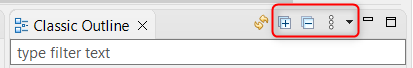
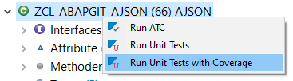

Now when there is a need to call SAP Backend, the call will be don in Eclipse Job, instead of separate Thread.
This should lead to stop the situation of freezing Eclipse due to waiting for RFC call to finish. Figure 1: Job calling the SAP RFC FM
ABAP Classic Outline - Changelog version 1.0.4
Frontend
Sometimes the view of Classic Outline was hanging without real reason. This should be solved now.
Classic Outline view will now correctly show, that the editor is not supported, instead of showing last supported object outline.
Backend - please update backend using abapGit
Navigation to super/subclasses and it's components is corrected for S/4
ABAP Classic Outline - Changelog version 1.0.3
Expand / Collapse buttons added to Classic Outline View

Figure 1:New buttons on the view toolbar
Context menu added with functionality:
Run ATC (with default system check variant)
Run Unit Tests
Run Unit Tests with Coverage

Figure 2:Context menu for running ATC and Unit Tests
Bugs Solved:
When removing the filter from outline, tree was fully collapsed
During creation of the Outline tree, tree was expanded to all levels in some circumstances